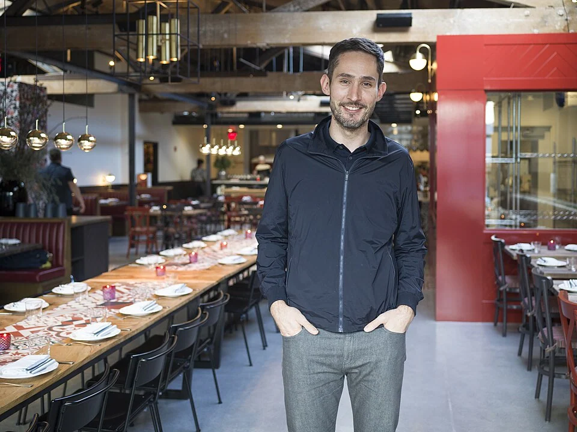

Instagram bugün yalnızca kare fotoğraflara filtre eklenen bir uygulama değil. Kısa videoların, geçici paylaşımların, özel mesajların, öneri sistemlerinin ve markaların bir araya geldiği büyük bir sosyal platform. Bu dönüşüm, en başta her şeyi yapan bir uygulama kurmaktan değil, tam tersine fazla şeyi olan bir ürünü sadeleştirmekten doğdu.
Bu hikâyenin merkezinde iki kurucu var: Kevin Systrom ve Mike Krieger. Onların ürünü, 6 Ekim 2010’da iPhone için yayımlandı. Facebook’un (bugünkü Meta) satın alımıyla kaynak ve erişim kazandı; sonraki yıllarda ise kullanıcıların ne paylaştığını ve akışta ne gördüğünü değiştiren yeni biçimlere yöneldi.
Kurucular ve Instagram’dan önceki Burbn
Kevin Systrom yazılım ve ürün geliştirme alanında, Google ve seyahat girişimi Nextstop’ta deneyim kazanmıştı. Mike Krieger ise Meebo’da yazılım ve kullanıcı deneyimi üzerine çalışıyordu. Systrom’un girişim fikri geliştirme isteği ile Krieger’in tasarım ve mühendislik becerileri, 2010’da ortak bir projede buluştu.
İlk denemelerinin adı Burbn’du. Konum paylaşımı, bir yere “check-in” yapma, planları kaydetme ve fotoğraf paylaşma gibi işlevleri aynı uygulamada topluyordu. O dönemde Foursquare gibi konum servisleri yükselişteydi; dolayısıyla Burbn’un çıkış noktası zamanın ruhuna uygundu. Fakat çok sayıda özellik, ürünü kullanmayı kolaylaştırmıyordu.
Kurucuların beta kullanıcılarında gördüğü davranış, ürün kararını değiştirdi: İnsanlar check-in’den çok fotoğraf paylaşıyordu. Systrom ve Krieger bu sinyali izleyerek Burbn’un büyük bölümünü bıraktı ve fotoğrafı merkeze alan daha küçük bir uygulama tasarladı. Bu, sonradan “pivot” diye anılacak kararın özüydü: Kullanıcıların söylediklerinden ziyade gerçekten ne yaptıklarına bakmak.
Yeni uygulama tek bir işi, az adımla yapmaya çalışıyordu: Fotoğrafı seç, görünüşünü düzenle, paylaş. Filtreler yalnızca süs değildi; telefon kameralarının ve mobil fotoğrafçılığın sınırlı olduğu bir dönemde, sıradan bir kareyi kişisel bir görsel dile dönüştürüyordu. Fotoğrafın kendisi kadar, kolayca paylaşılabilmesi de ürünün parçasıydı.
6 Ekim 2010: İlk Instagram
Instagram 6 Ekim 2010’da Apple App Store’da yayımlandı. İlk sürüm yalnızca iPhone’da çalışıyordu. Bu tercih, daha en başta olabilecek kullanıcı sayısını sınırlasa da, ekibin tek bir cihaz ailesi için hızlı ve tutarlı bir deneyim geliştirmesine imkân verdi. İlk akış kronolojikti; takip edilen hesapların fotoğrafları sırayla görünüyordu.
O günlerde akıllı telefon kamerası giderek daha çok kişinin “yanında taşıdığı kamera” hâline geliyordu. iPhone 4’ün kamerası, fotoğrafı çekip anında çevrimiçi paylaşma fikrini daha inandırıcı yaptı. Instagram’ın ilk kullanıcıları arasında tasarım ve fotoğraf meraklıları ile San Francisco teknoloji çevresinden insanlar vardı. Uygulama, fotoğrafı telefonda çekme, kareye dönüştürme ve filtreleme akışını birkaç dokunuşa indirerek bu erken topluluğun dışına da taşabildi.
TechCrunch’ın dönemin haberlerine dayanan geriye dönük anlatımına göre uygulama ilk gün yaklaşık 25 bin kullanıcıya ulaştı; üç ay sonra bir milyon kullanıcıyı aşmıştı. Bu hızlı başlangıcın arkasında yalnızca filtreler yoktu: Paylaşımın zahmetsiz olması, gönderilerin başka sosyal ağlara da aktarılabilmesi ve yeni kullanıcıların takip edecek kişileri kolayca bulması büyümeyi besledi.
Android’e açılma ve hızlanan büyüme
Instagram’ın iPhone’a odaklanması başlangıçta ürün kalitesini ve küçük ekibin hızını korudu; ancak Android kullanan geniş kitle uygulamanın dışında kalıyordu. Android sürümü 3 Nisan 2012’de yayımlandı. TechCrunch o günlerde Instagram’ın iOS’ta on milyonlarca kullanıcıya ulaştığını ve Android uygulamasının ilk 24 saatinde bir milyondan fazla indirme aldığını aktardı. Böylece platform, tek bir telefon ekosisteminin ötesine geçti.
Kullanıcı sayısı bu dönüm noktalarını izledi: Instagram, 2010’un sonunda bir milyon, 2011’de on milyon kullanıcıyı geçti; 2012’de Facebook satın alımını duyururken iOS’taki kayıtlı kullanıcı sayısı on milyonlarla ifade ediliyordu. Şirketin daha sonraki duyuruları 2018’de bir milyar aylık aktif kullanıcıya, Instagram yöneticileri ve Meta’nın Eylül 2025 açıklamaları ise üç milyara ulaşıldığını bildirdi.
Bu rakamlar aynı ölçümün değişmeden sürmüş bir serisi gibi okunmamalı. İlk yıllardaki “kullanıcı” ve indirme sayıları, sonraki aylık aktif kullanıcı (MAU) açıklamalarıyla aynı şey değil. Üç milyar rakamı şirket yöneticilerinin bildirdiği aylık aktif kullanıcı ölçüsüdür; bağımsız olarak sayılmış üç milyar farklı insan anlamına gelmez. Büyüme verileri bu nedenle tarihleri ve açıklayan tarafı belirtilerek değerlendirilmelidir.
Facebook’un 2012 satın alımı: Fiyat ve vaatler
Facebook, Instagram’ı satın almak üzere anlaşmaya vardığını 9 Nisan 2012’de duyurdu. Açıklanan yaklaşık 1 milyar dolarlık bedel nakit ve Facebook hisselerinden oluşuyordu; işlem olağan kapanış koşullarına bağlıydı ve aynı yıl içinde tamamlandı. Bu değer, Instagram henüz büyük bir reklam geliri oluşturmamışken verildiği için dönemin teknoloji dünyasında dikkat çekti.
Mark Zuckerberg, satın alımı duyururken Instagram’ın bağımsız bir ürün ve marka olarak büyütüleceğini, Facebook’a bağlanmanın zorunlu olmayacağını ve insanların Instagram’da ayrı takipçi ilişkileri kurabileceğini söyledi. Bunlar şirketin kamuya açıkladığı niyet ve güvencelerdi; uygulamanın hiçbir zaman değişmeyeceğine dair bir söz değildi. Facebook’un altyapısı Instagram’ın küresel ölçekte büyümesini kolaylaştırırken, reklam ve öneri sistemleriyle ana şirketin iş modeline daha fazla bağlanmasının da yolunu açtı.
Kurucuların ayrılığı da bu dönüşümün parçası oldu: Systrom ve Krieger, Meta’daki yönetim ve ürün yönüyle yaşanan gerilimlerin ardından 2018’de şirketten ayrıldı. Instagram bağımsız uygulama olarak kaldı; fakat artık küçük bir girişimin kararlarından çok, milyarlarca kişiye erişen bir teknoloji şirketinin stratejileri içinde şekilleniyordu.
Filtrelerden video, Stories, Reels ve alışverişe
Instagram’ın ürün geçmişi, fotoğrafa eklenen yeni özelliklerin toplamından ibaret değil. Her yeni format, paylaşımın ne kadar kalıcı olacağı, kimin göreceği ve kullanıcıların uygulamada nasıl vakit geçireceği konusunda yeni bir varsayım getirdi.
- Filtreler ve fotoğraf akışı: İlk ürün fotoğrafı düzenleyip takipçilerle paylaşmayı kolaylaştırdı. Kare kadraj ve görsel tutarlılık, kişisel profilleri birer seçilmiş portföye benzetti.
- Video: Haziran 2013’te gelen video özelliği başlangıçta 15 saniyeye kadar kayıt ve videoya özel filtreler sunuyordu. Fotoğraf paylaşımına hareket, ses ve anlatı eklenince Instagram’ın konusu tek bir görselden gündelik hikâye anlatımına doğru genişledi.
- Algoritmik akış: 2016’da gönderiler yalnızca kronolojik sırada gösterilmek yerine, kullanıcının ilgi duyabileceği içeriklere göre sıralanmaya başladı. Instagram, o sırada takip edilen gönderilerin yüzde 70’inin akışta kaçırıldığını gerekçe gösterdi. Bu oran ve gerekçe şirketin kendi açıklamasıdır; aynı karar, “takip ettiğim kişilerden neyi ne zaman göreceğimi platform belirliyor” eleştirisini de doğurdu.
- Stories: Ağustos 2016’da sunulan, 24 saat sonra kaybolan paylaşımlar; profil ızgarasında kalıcı ve özenle seçilmiş fotoğraflar paylaşma baskısını azalttı. Daha geçici ve sık paylaşım alışkanlığını ana uygulamaya taşıdı. Özel mesajla yanıt verme ve izleyenleri görme özellikleri, hikâyeleri hem daha sohbet benzeri hem de daha ölçülebilir kıldı.
- Alışveriş: Ürün etiketleri, mağaza vitrinleri ve alışveriş alanları, görsel keşfi ticari keşfe bağladı. İşletmeler ürünleri bir gönderiye bağlayabilirken kullanıcılar beğendikleri bir üründen satıcıya geçebiliyordu. Instagram, 2020’de Shop sekmesini öne çıkardı; 2023’te gezinme çubuğundan kaldırdı. Bu değişiklik alışverişin tümden bittiği anlamına gelmedi, fakat platformun özellik önceliklerinin değişebildiğini gösterdi.
- Reels: 2020’de küresel ölçekte duyurulan kısa video formatı, çok klipli kayıt, ses ve düzenleme araçlarını uygulamaya ekledi. Reels, yalnızca takip edilen arkadaşlara değil, öneri akışları üzerinden takip edilmeyen hesaplara da erişim hedefledi. Böylece takipçi sayısı kadar, sistemin bir videoyu kime önereceği de görünürlükte belirleyici oldu.
Formatlar değiştikçe Instagram’ın ana fikri de dönüştü: Başlangıçta kullanıcıların takip ettiği kişilerin fotoğrafları merkezdeydi; bugün Feed, Stories, Reels, Explore, arama ve mesajlar farklı ihtiyaçlara göre işleyen ayrı alanlar. Instagram yöneticisi Adam Mosseri’nin 2023 açıklaması, tek bir “algoritma” yerine bu bölümlerin her birinde ayrı sıralama sistemleri bulunduğunu ve önerilerin takip edilmeyen hesaplardan da içerik getirdiğini söylüyor.
İçerik üreticileri, işletmeler ve yeni alışkanlıklar
Instagram, fotoğrafı yalnızca arkadaşlara gönderilen bir anı olmaktan çıkarıp kamusal bir profile dönüştürdü. Filtreler ve düzenli ızgara, kişisel bir görsel üslup kurmayı kolaylaştırdı; takipçi sayısı, beğeni ve yorumlar ise bu üslubun görünür ölçülerine dönüştü. Bu ortam, moda, yemek, seyahat ve güzellik gibi alanlarda içerik üreticilerinin izleyici toplamasına ve markalarla iş birliği yapmasına elverişliydi. Etkileyici pazarlamayı tek başına Instagram yaratmadı, ancak fotoğraf, video, takip ve reklamı aynı yerde birleştirerek ölçeklenmesine yardımcı oldu.
İşletmeler için profil, ürün kataloğu ve doğrudan mesajlaşma; vitrin, keşif ve müşteri iletişimini tek mobil yüzeyde buluşturdu. Küçük işletmeler profesyonel bir fotoğraf ekibine ihtiyaç duymadan ürün gösterebildi; karşılığında platformun görünürlük kurallarına ve ücretli tanıtım seçeneklerine daha bağımlı hâle geldi. Bir içeriğin erişimi, yalnızca üreticinin değil, öneri sisteminin ve reklam pazarının da kararlarına bağlıydı.
Kullanıcı alışkanlıkları da buna göre değişti: Fotoğraf seçip paylaşmak, kısa video izlemek, hikâyelere bakmak ve mesajlara dönmek aynı uygulamada art arda yapılan eylemler hâline geldi. Beğeni sayısının gizlenmesi gibi ürün kararları, etkileşimin ne anlama geldiğine dair kaygılara yanıt ararken; içerik üreticileri için erişim ve etkileşim hâlâ işlerinin ölçülebilir parçaları olmaya devam ediyor.
Gizlilik, genç kullanıcılar ve platform gücü
Daha kişiselleştirilmiş akış, yalnızca daha ilgili içerik demek değil; kullanıcının takipleri, beğenileri, izleme süresi ve etkileşimlerinden çıkarım yapan sistemler demek. Instagram, bu sinyalleri akışı sıralamak için kullandığını kendi teknik açıklamalarında anlatıyor. Bu yaklaşım keşfi kolaylaştırabilir; aynı zamanda neden belirli bir gönderinin öne çıktığını anlamayı ve platformun kararlarına itiraz etmeyi zorlaştırabilir. Kronolojik akış, Favoriler ve “Takip Edilenler” gibi seçenekler bu kontrol tartışmasına verilen sınırlı ürün yanıtlarıdır.
Gençler açısından mesele uygulamanın yaygınlığından ibaret değil. Pew Research Center’ın Eylül–Ekim 2023’te ABD’de 13–17 yaş arası gençlerle yaptığı araştırmada katılımcıların yüzde 59’u Instagram kullandığını, yaklaşık yarısı ise her gün kullandığını söyledi. Bu sonuçlar ABD’deki o dönem örneklemini anlatır; dünya gençlerinin tamamına genellenemez.
2021’de The Wall Street Journal, Meta’nın kurum içi araştırmalarını inceleyerek bazı genç kızların Instagram kullanımını beden imajı ve ruh hâliyle ilgili olumsuz deneyimlerle ilişkilendirdiğini bildirdi. Bu, önemli bir gazetecilik bulgusu olsa da tek başına Instagram’ın bütün gençlere zarar verdiğini kanıtlayan klinik bir çalışma değildir; araştırmaların kapsamı ve nasıl yorumlanması gerektiği tartışmalıdır. Daha sağlam sonuç, çok sayıda gencin kullandığı ve kişiselleştirilmiş içerik sunan bir platformda güvenlik, şeffaflık ve tasarım tercihleri konusunda hesap verebilirliğin önem taşıdığıdır.
Facebook’un Instagram’ı satın alımı da platform gücü tartışmasının merkezinde yer aldı: Büyük bir ağ, yeni bir rakibi satın aldığında kullanıcıların seçenekleri ve rekabet nasıl etkilenir? 2012 anlaşmasının kamuya açık açıklaması şirketin o günkü yaklaşımını gösteriyor; sonraki ürün değişimleri ise bağımsız kalma vaadinin pratikte nasıl değiştiğine dair daha geniş soruyu canlı tuttu.
Bugünkü Instagram ve geleceğe dair ölçülü bir bakış
11 Kasım 2026 itibarıyla Instagram; fotoğraf paylaşımının yanı sıra kısa videolar, geçici hikâyeler, mesajlaşma, önerilen içerikler, reklam ve alışveriş araçlarını bir arada sunan bir platform. Üç milyar aylık aktif kullanıcıya ulaştığı bilgisi Eylül 2025’te Meta yöneticileri tarafından duyuruldu ve bağımsız teknoloji basınında haberleştirildi. Bu sayı ölçeği anlatır; kullanıcıların ne kadar memnun olduğunu, her özelliğin ne ölçüde kullanıldığını ya da platformun gelecekteki büyümesini tek başına açıklamaz.
Instagram’ın bir sonraki aşamasında mesajların, Reels’in ve önerilerin öneminin artması muhtemel görünüyor; şirket yöneticileri de 2025’te büyümeyi bu alanlarla ilişkilendirdi. Ancak kullanıcılar, fotoğraf paylaşmanın ve takip ettikleri kişilerin gönderilerini görmenin uygulamanın temelinde kalmasını istiyor. Platformun zorluğu, yeni izleyici ve gelir kaynakları ararken bu beklentiyi gözden kaçırmamak.
Instagram’ın tarihi, bir özelliğin diğerini izlemesinden çok, basitliğin ölçekle karşılaşınca nasıl değiştiğinin öyküsü. Burbn’dan fotoğrafa geçiş, ürünün odağını keskinleştirdi; Facebook’un altyapısı büyümeyi hızlandırdı; video ve öneriler ise onu farklı bir dikkat ekonomisinin içine taşıdı. Bugünkü başarı, yalnızca kaç kişinin hesap açtığıyla değil, platformun kullanıcılarına ne kadar kontrol, güven ve anlamlı bağlantı sunabildiğiyle ölçülecek.
Kaynaklar ve ileri okuma
- Siegler, M. G. (2012). From 0 To $1 Billion In Two Years: Instagram’s Rose-Tinted Ride To Glory. TechCrunch. Burbn, kurucuların geçmişi, ilk kullanıcılar ve büyüme üzerine dönemin haberlerine dayanan anlatım. TechCrunch yazısı.
- Siegler, M. G. (2010). Instagram Launches. TechCrunch, 6 Ekim 2010. İlk iPhone sürümü ve kurucunun fotoğraf paylaşımı vizyonu. Lansman haberi.
- Facebook (2012). Facebook to Acquire Instagram, 9 Nisan 2012. Yaklaşık 1 milyar dolarlık nakit ve hisse bedeli ile Facebook’un duyuru sırasındaki bağımsız ürün taahhütleri. Şirket açıklamasıdır. Facebook/Meta duyurusu.
- TechCrunch (2012). Instagram for Android is here, 3 Nisan 2012. Android sürümünün yayımlanması ve uygulamanın ilk kullanıcı deneyimi. Android lansman haberi.
- Systrom, K. (2013). Introducing Video on Instagram. Instagram. 15 saniyelik video özelliğinin ürün duyurusu. Şirket açıklamasıdır. Instagram video duyurusu.
- Instagram (2016). Introducing Instagram Stories, 2 Ağustos 2016. Hikâyelerin geçici paylaşım biçimi ve ilk özellikleri. Şirket açıklamasıdır. Instagram Stories duyurusu.
- Instagram (2020). Introducing Instagram Reels, 5 Ağustos 2020. Reels’in ilk küresel ürün açıklaması. Şirket açıklamasıdır. Instagram Reels duyurusu.
- Mosseri, A. (2023). Instagram Ranking Explained, 31 Mayıs 2023. Farklı bölümlerdeki sıralama sistemleri ve öneri akışı hakkında Instagram’ın açıklaması. Şirket açıklamasıdır. Instagram sıralama açıklaması.
- Instagram (2021). Shedding More Light on How Instagram Works, 8 Haziran 2021. Kronolojik akıştan sıralanan akışa geçişe ilişkin şirket açıklaması. Instagram’ın akış açıklaması.
- Silberling, A. (2025). Instagram now has 3 billion monthly active users, will test features to help users control their feeds. TechCrunch, 24 Eylül 2025. Üç milyar kullanıcı sayısının Meta yöneticileri tarafından duyurulması ve öneri/mesajlaşma odağı. TechCrunch haberi.
- Constine, J. (2018). Instagram hits 1 billion monthly users, up from 800M in September. TechCrunch, 20 Haziran 2018. Bir milyar aylık aktif kullanıcı kilometre taşı; Meta’nın duyurusunun bağımsız haberi. TechCrunch haberi.
- Pew Research Center (2023). Teens, Social Media and Technology 2023, 11 Aralık 2023. ABD’deki 13–17 yaş grubu için anket sonuçları ve araştırma yöntemi. Pew Research Center raporu.
- Wells, G., Horwitz, J. ve Seetharaman, D. (2021). Facebook Knows Instagram Is Toxic for Teen Girls, Company Documents Show. The Wall Street Journal, 14 Eylül 2021. Sızdırılan şirket araştırmalarına dayanan gazetecilik incelemesi; nedensellik kanıtı olarak değil, tartışmanın bir parçası olarak kullanılmıştır. WSJ haberi.
- Silberling, A. (2023). Instagram is removing the Shop tab, moving Reels from the center spot in design overhaul next month. TechCrunch, 9 Ocak 2023. Alışveriş sekmesinin kaldırılması ve değişikliğin kapsamı. TechCrunch ürün haberi.
Bilgi kesim tarihi: 11 Kasım 2026. Şirket açıklamaları ürün özellikleri ve şirketin bildirdiği kullanıcı sayılarını; bağımsız haber ve araştırmalar ise tarihsel bağlamı ve tartışmaları desteklemek için kullanılmıştır.